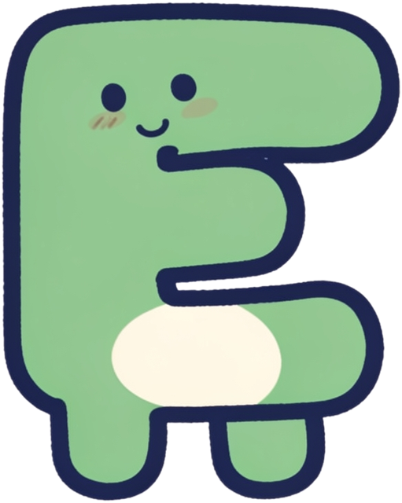
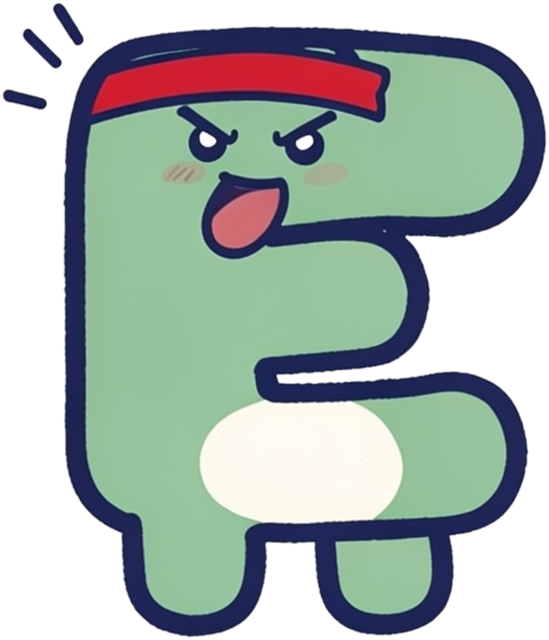
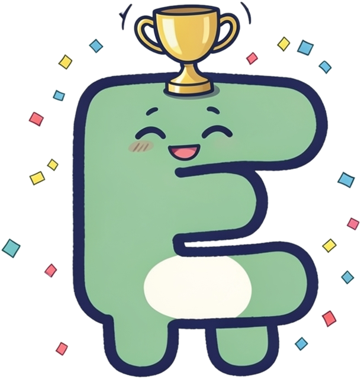

1〜4 のキーでも答えられます。ボールがゴールラインをこえる前に！
遊び方： 変える
ランダムに選んだ 10 語で1試合。正解でゴール、まちがい・時間切れは相手のゴール。
この遊び方で出せる語がまだありません。スペル・ディクテーションは、カードの「意味を選ぶ」を卒業した語だけが出ます。まず「意味4択」かカードで練習しよう
ホームへもどる

時計は止まっています
Esc キーでも 止める／つづける